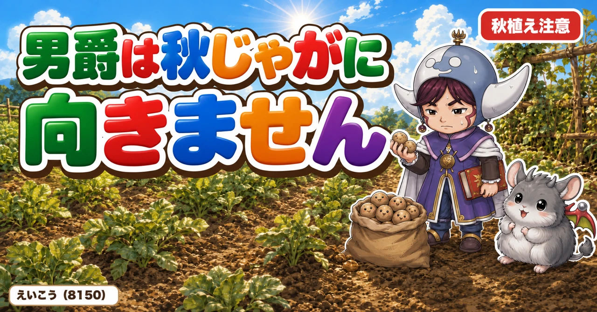
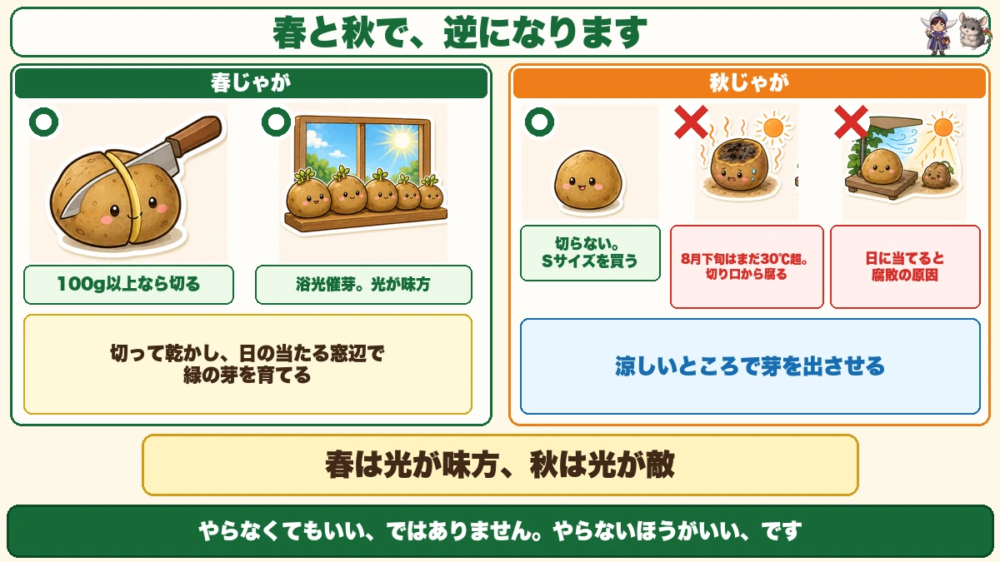
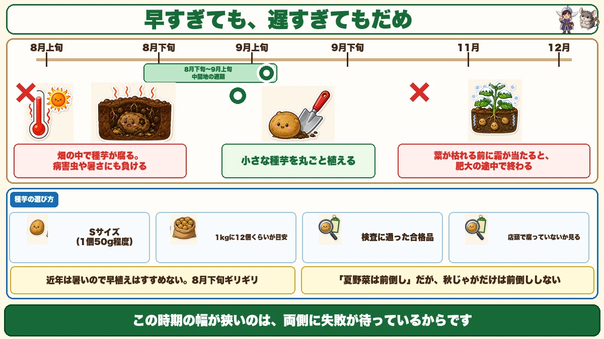
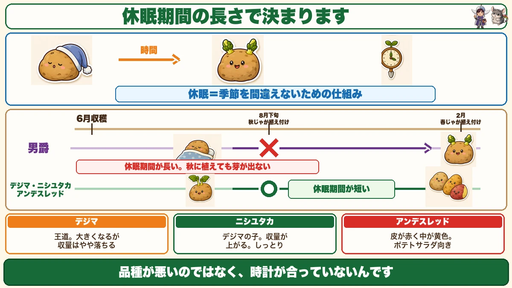

秋じゃがいもの育て方｜植え時・種芋・霜対策と失敗診断

どうも、8150（えいこう）です🌱 家庭菜園歴8年、理科の教員免許を持っていて、有機・無農薬で野菜を育てています。
📖 この記事の目次
この記事で分かること
- 秋植えは、残暑で種芋を傷めないことと、霜が来る前に芋を育てることを両方考えます。
- 種芋は秋植え用の表示と健康状態で選び、丸ごと植えられる小さめのものを基本にします。
- 日陰での芽出しと、春に行う日光を利用した芽出しは分けます。夏の強い日差しへ置きません。
- 土寄せをする方法と、土を覆って省力化する方法では管理が違います。手順をつぎはぎしません。
- 芽が出ない、葉が傷む、芋が緑になるときは、症状を分けてから次の作業を決めます。
- 植える期限や品種の可否には異なる説明があります。数字の背景を比べ、収穫と保存まで見通します。
秋じゃがいもで最初に決めたいのは、『どこで』『いつまで育てられて』『どの種芋を使うか』です。春にうまくいったから、植える月だけ変えればよさそう。なんかそう思いたくなるんですけど、秋には秋の段取りがあります🥔
このページでは、植える前の確認から、収穫した芋の仕分けまで順番に整理します。初めてなら早見と作業の手順を。すでに畑で困っているなら症状別の章からどうぞ。みなさんが必要な場所へ戻れるように、数字と判断の理由を分けて置いています。
秋作には残暑、雨、霜という難しさがあります。一方で、冬に食べるじゃがいもを自分で収穫する楽しみもあります。簡単と決めつけず、怖がりすぎず。まず植える場所の条件をそろえるところから始めましょう☺️
早見：秋じゃがいもの育て方（ひと目で分かる数字）
計画を立てるときに見る数字
- 植え付け：中間地の秋作では8月下旬〜9月上旬が目安として挙がります。気温の落ち着く時期を9月上旬〜中旬とする説明もあり、全国一律の締切ではありません。
- 地域差：寒冷地と暖地では、中間地から前後へずれるという説明があります。ただし『どこでも2週間ずらせばよい』という確定した暦にはできません。地元の秋作向けの植え時を確認します。
- 土づくり：9月に植える計画なら、8月後半から場所と排水、前作の肥料を点検する段取りがあります。
- 丸ごと使う種芋：1個50g程度を選ぶ説明があります。50gは合否の境界ではなく、切らずに扱いやすい購入時の目安です。
- 芽出しの場所：涼しい日陰で管理し、15℃くらいを挙げる説明があります。家庭でその温度を必ず作る指示や、冷蔵庫に入れる指示とは違います。
- 株間：秋の植え付け実演では30cmという説明があります。春・一般の資料には30〜45cmの幅があり、45cmを秋の標準値として一律には採用しません。
- うね幅：今回の秋作の材料から、すべての方法に共通する幅は決められません。春の60cm前後という例を秋へそのまま移さず、株の列数、通路、土寄せに使う土を先に確保します。
- 植える深さ：土寄せ式と超浅植えでは条件が異なります。秋作共通の深さは材料から確定できないので、採用する方式の植え方と後の遮光を合わせて確認します。
- 元肥：植え付け前に、前作の肥料の残りも含めて設計します。秋の実演には株間へ置く方法がありますが、今回の材料では面積当たりの共通量を確定できません。
- 追肥：しない方法と、生育途中に補う説明があります。秋作共通の回数や時期は材料から確定できないので、選んだ方式の元肥と合わせて確認します。
- 芽かき：秋作共通の残す本数は材料から確定できません。芽を下向きにした浅植え式には芽かきを省く説明もあり、栽培方法と一緒に判断します。
- 土寄せ：従来の土寄せ式では、生育に合わせて株元へ土を足します。秋作共通の回数は材料から確定できず、被覆式まで同じ手順ではありません。
- 収穫時期：11月下旬〜12月という説明が中心です。8月30日に植え、12月中旬に収穫した秋の試験例もありますが、霜よけをした条件付きの記録です。
- 収穫までの日数：秋専用の一律の必要日数は、今回の材料では確認できません。春作の約100日を、秋にも待つべき日数として使わないでください。
- 連作の間隔：じゃがいも、なす、トマト、ピーマンなどのナス科を続けない計画にします。『必ず何年あける』という秋専用の共通年数は、今回の材料からは示せません。
- 防寒による温度差：地面を覆うことで、地温が3〜5℃ほど上がることを期待する説明があります。葉がその分だけ霜に耐えるという保証ではありません。
数字をそのまま足し算しない
早見で大事なのは、数字の多さより『同じ方法の数字か』です。深く植える方法の深さに、浅植え式の覆い方を足し、そのうえ土寄せはしない・・・となると、芋を守る仕組みが途中で抜けてしまうことがあります。
株間30cmなら、1列に何株置けるかを考えられます。でも株を置く場所だけ確保して、隣の通路をなくしてしまうと、土寄せも見回りもやりにくくなります。数字は植えられる数を増やすためだけでなく、あとで管理できるかを確かめるためにも使ってください。
種芋の袋に地域別の適期や植え方が書かれている場合は、まずその表示を見ます。別の説明と違うときには、品種、地域、土寄せの有無をそろえて比較します。平均を取って真ん中にすれば安心、という話ではないんですよね。
- 秋作に対応する種芋を選んだ
- 植える地域の適期と霜の時期を確認した
- 土寄せ式か被覆式かを決めた
- 通路と水の逃げ道を確保した
- 元肥と追肥を、同じ栽培方法の段取りで考えた
未確認の数字は、無理に空欄を埋めず、種芋の表示や栽培する場所で確かめましょう。地域の栽培案内を使うなら、その地域と作型が手元の計画に合うかも見てください。
作業の手順（時期の順）
1．植える場所と、霜までの期間を決める
- 育てたい場所の地域区分と、秋植えの適期を確認します。
- 強い暑さが残る時期と、霜が来始める時期を見て、その間に育てられるか考えます。
- 前作の野菜を調べ、ナス科が続く場所を避ける計画を立てます。
- 雨のあとに水がたまるか、通路から水が抜けるかを確認します。
- 土寄せに使う土と作業する通路を確保できるか見て、栽培方式を選びます。
秋作の計画は、植える日の前後を両方見ます。早く植えれば長く育つから有利、とだけ考えると、高温の土で種芋が傷む問題を見落とします。涼しくなるまで待てば安心、とだけ考えると、今度は霜までの日数が短くなります。
初めてなら、近くで販売される秋用種芋の適期と、地域の霜の目安を照らし合わせるところからで大丈夫です。秋が短い場所で、中間地と同じ収穫を無理に目指す必要はありません。春作へ回す判断も、計画の一つです。
植える前に排水を確かめるのは、種芋が地下にいるからです。葉が出る前の傷みは地上から見えにくく、気づいたころには植え直せる期間が減っています。雨のたびに水が残る場所なら、水の逃げ道を整えてから始めます。
2．秋植えの表示と、種芋の健康状態で買う
- 食用売り場ではなく、栽培用の種芋から探します。
- 秋植え向きの表示と、品種名、適期を確認します。
- 検査済みの種芋を基本にし、袋の中に腐ったものがないか見ます。
- 丸ごと使いやすい小さめの芋を選び、植える場所に必要な個数を数えます。
- 持ち帰ったら傷みを確認し、植えるまで涼しい場所で管理します。
じゃがいもは味の好みだけで品種を選ぶと、秋の芽出しでつまずくことがあります。収穫後に芽が動き出すまでの休眠が、品種で違うからです。まず秋に植える条件に合うか。そのあとで、食感や料理への使い方を考える順にします。
秋作の候補にはデジマ、ニシユタカ、さんじゅう丸などがあります。ここに名前があるから全国のどこでも同じ時期に育つ、とまでは受け取らないでください。店の表示にある栽培地や適期を確認します。名前だけ知っていて、袋の秋植え表示を見落とすのはもったいないです。
ニシユタカは収量やしっとりした食感を重視する候補として、赤い皮のタイプは見た目や食感を楽しむ候補として挙げられています。ただし、資料には測った収量の順位がない説明もあります。味の評価と、畑でどれだけ収穫できるかは分けて選びます。
1kgの袋を見ても、株数は重さだけでは分かりません。大きい芋が少数入った袋と、小さめの芋が多く入った袋では、丸ごと植えられる個数が違います。重さを個数へ勝手に換算せず、実際の袋の中を確認してください。
売り場で芽が出ているものは、芽を折らずに持ち帰ります。植える前から柔らかく腐っているものは、元気な芋と一緒に扱いません。『あとで肥料を入れたら元気になるかな』という問題ではないので、ここで状態を見分けます。
3．涼しい日陰で待たせ、芽を傷めず準備する
- 直射日光と、日中に熱がこもる場所を避けます。
- 袋の中も見て、蒸れや腐敗がないか確認します。
- 芽が動き始めた種芋は、芽を折らないように取り扱います。
- 畑の準備と暑さの状況をそろえ、植え付けへ進みます。
秋の芽出しは、強い日差しに当て続ける作業ではありません。涼しい日陰で種芋の状態を見ることが中心です。春の『浴光催芽』という、光を利用して芽を育てる方法と、ひとまとめにしないでください。
15℃くらいという管理の目安はありますが、芽が出る日数の保証はありません。置いた日から何日たったかに加えて、芽が見えるか、芋が傷んでいないかを確認します。温度の数字だけを追って、家庭の冷蔵庫を自己流の発芽装置にする必要はありません。
買った時点で芽が動いていれば、その芽を大切にします。芽がまだ見えないなら、品種と保管環境を確かめます。休眠が残っている可能性と、腐って芽が出せなくなっている状態は違うので、『芽がない』だけで同じ対処にしません。
4．種芋を切らずに使い、土と肥料を準備する
- 種芋は丸ごと使う前提で並べます。
- 前作で使った肥料を振り返り、追加が必要かを確認します。
- 元肥の方法を決め、使う肥料の表示に合わせて量を確認します。
- 土を耕して排水を整え、植える列と通路を分けます。
- 湿りすぎて作業しにくい土へ、急いで植え込まないようにします。
秋に分割を避ける理由は、切り口を作ると暑い時期に腐りやすいからです。大きい芋を切れば株数を増やせますが、植えたあとで失うなら、その節約は収穫につながりません。丸ごと使いやすいサイズを最初に選ぶ方が、段取りもすっきりします。
大きい種芋しか手に入らなかったときも、初心者はそのまま使う方を基本にします。経験者が切って乾かす例はありますが、例外の章で条件ごとに扱います。切断する話だけ抜き出して、この手順へ足さないでください。
元肥には、土全体へ混ぜる方法と、種芋の間に置く方法があります。どちらを選ぶ場合も、前作の肥料が残っていることを考えます。残っている分を無視して、別の栽培法の配合を上乗せすると、必要以上に多くなることがあります。
秋の実演には、鶏糞を株の間へ一握り置く方法があります。ただ、一握りは手の大きさや製品で変わります。畑の面積当たり何gという標準量へ換算しません。鶏糞を避ける説明もあるので、初めての土で安さだけを理由に選ばず、土の酸性・アルカリ性と製品の性質を確認します。
5．栽培方式をそろえて植え付ける
- 株間の目安を確認し、植える位置を決めます。秋の実演では30cmの例があります。
- 丸ごとの種芋を置きます。芽を上へ向けて初期の生育を早める説明があります。
- 選んだ方式に合う覆土を行い、芋を光から守る計画を確認します。
- 土寄せ式なら、あとで寄せる土を通路側に確保します。
- 被覆する方式なら、設置後に芽を見られるか、熱がこもらないかを確認します。
- 植えた日と、使った方法を記録します。
ここでいう覆土は、種芋へ土をかぶせることです。材料には超浅植えの実演もありますが、秋作すべてに共通する深さを確定できる数字はありません。深さだけ別の方式から借りると、あとで土寄せや遮光が足りなくなる場合があります。
土寄せをする方法は、育つ途中で株元へ土を寄せて、できてきた芋を守ります。被覆して土寄せを減らす方法は、土の表面を覆う資材がその役目の一部を担います。どちらも名前だけ選ぶのではなく、『新しい芋ができたとき、何で覆われるか』まで考えます。
黒マルチは、土を覆う黒いシートです。雑草対策や作業の省力化に役立つ説明がある一方、秋の暑い時期には種芋が傷む問題も記録されています。春の浅植えを秋に移して、種芋を熱いシートへ直接触れさせるような真似は避けます。
植えたら作業が終わり、ではありません。被覆の下で芽が動いていると、外から見えにくいことがあります。芽を傷めず地上へ出せるか、被覆がずれて光が入っていないかを見回りの項目に入れておきます。

この図は、暑い時期に切断や日光を利用した芽出しをそのまま行わない、という注意として使ってください。秋の葉に光が要らないという意味ではありません。植え付け前の種芋の扱いと、育っている葉の働きは分けます。
6．出た芽を確認し、芽かきと土寄せを進める
- 芽が出ている位置を確認し、空いている場所がないか見ます。
- 芽かきをする方式なら、残す芽と除く芽を見分けます。
- 除く芽を扱うときは株元を支え、残す茎や種芋を動かさないようにします。
- 土寄せ式では、生育に合わせて株元へ土を寄せ、浅いところの芋を覆います。
- 追肥をする方式なら、決めた時期と表示量に合わせて補います。
- 雨や風のあとに、土や被覆がずれていないかを確かめます。
芽かきは、地上に出てきた茎を整理する作業です。保存中の食用じゃがいもから芽を取る作業とは目的が違います。秋の材料だけでは、どの方式にも共通する残す本数を確定できないので、一律に『必ず何本』とは決めません。
ここは私の実際の話が一つあります。最初の年、じゃがいもの芽かきをハサミでしていました。今は手で横へ倒して抜いています。この体験は秋作に限った話ではありません。作業名だけ覚えていると、『どこから除くのか』が抜けやすいんですよね。
手で扱うときも、残す芽まで一緒に引き上げないことを意識します。株元の土を支えず強く引っ張ると、選んで残した芽へも力が伝わります。慌てず一本ずつ見分けて進めれば大丈夫です。
土寄せでは、葉を全部埋めるのではなく、芋が露出しないように株元の土を整えます。寄せるための土が足りないと、光を遮る役目を果たしにくくなります。植える段階で通路と土を確保しておく理由が、ここで効いてきます。
7．冷え込みの前に、保護するか収穫するかを決める
- 天気予報と、畑の葉の状態を確認します。
- まだ葉が働いていて育てる余地があるなら、防寒方法を検討します。
- 地面を覆う方法と、株の上へかける方法を区別します。
- 覆いが風で外れたり、株を押しつぶしたりしないように設置します。
- 霜の危険が強い、地上部が枯れた、収穫が近い場合は、掘る予定を立てます。
防寒の目的は、葉が働ける期間を保つことです。冷え込みで葉が傷んでから『肥料を追加して取り返す』という順番にはしません。霜が近づく前に、続けて育てるか、収穫へ進むかを判断します。
材料には、土を覆うビニールマルチ、わら、不織布を用いる方法があります。すでに株が育っている場所へ、覆いを無理に一枚かぶせるのではなく、株を避けて設置する工夫が必要です。覆いをかければすべての低温から守れる、という保証ではありません。
地温が3〜5℃ほど上がることを期待する説明もあります。ただし、その数字は夜の空気の最低温度ではありません。地面が温まりやすいことと、葉が霜に当たらないことを同じに扱わず、地上の保護も考えます。
8．地上部と天候を見て掘り、すぐ仕分ける
- 収穫の暦、葉や茎の枯れ方、霜の危険を合わせて見ます。
- 雨で土がぬかるむ日は避け、作業できる状態を確認します。
- 株のすぐ下へ道具を刺さず、芋の位置を考えて外側から土を緩めます。
- 掘った芋は投げず、皮をこすり落とさないように扱います。
- 健全なもの、傷ついたもの、腐ったもの、緑化したものを分けます。
- 健全な芋は風の通る日陰で表面を乾かし、光を避けて保管します。
秋の材料には、地上部が十分枯れてから収穫する説明と、霜が来る前の収穫を重視する説明があります。少し黄ばんだ葉だけで全株を掘る、と決めることも、完全に枯れるまで霜を無視して待つことも避けます。判断の違いは、両論の章で整理します。
薄い皮を無理にこすると、保存中に傷む原因になります。土を落とすことと、皮を削ることは別です。乾いたあとに扱いやすくなった土を軽く落とすくらいの気持ちで、表面を大切にしてください。
長く置く予定の芋と、傷がついた芋を同じ箱へ混ぜないようにします。腐ったものや緑色になったものは食用として分けます。傷があるものを『先に使う』と考える場合も、腐敗がないかを確認することが先です。
9．保存中も見回り、次の作付けへつなぐ
- 保管場所へ光が当たらないか、湿気がこもらないか見ます。
- 柔らかくなった芋や腐敗が出たら、健全なものから分けます。
- 芽が出始めたら、食べる芋の状態確認と、栽培用の種芋選びを別に考えます。
- 畑に小さな芋を残していないか確認し、次の作付け前に整理します。
- 購入した種芋、植え付け、芽出し、収穫の記録を見直します。
秋に収穫したから春まで全部置ける、とは決めません。保存期間は芋の成熟、傷、保管環境などで変わります。材料には、家庭での温湿度をそろえた秋作の保存試験がないため、何か月安全という期限は置かないでおきます。
収穫した芋を次の種芋へ回す試験もありますが、食べられる芋であることと、病気を持ち込まない種芋であることは同じではありません。次に植える計画では、改めて検査済みの種芋を基本にします。
記録を見直すときは、一番大きな芋だけで出来を決めないようにします。芽が出なかった場所、収穫できた株の割合、傷や緑化した芋の有無も確認します。『育った株では大きかった』『植えた場所全体では欠株が多かった』は、両方とも残しておくと次の計画に役立ちます。
失敗の見分け方（症状→原因→やること）
植えたのに芽が見えない
- 症状：同じ列の一部、または全体で芽が地上へ出てきません。
- 考えられる原因：種芋の休眠が残っている、高温や過湿で腐った、被覆の下に芽があるなどが候補です。
- やること：品種、植えた日、雨、覆い方を確認します。被覆の下を芽に触れないように確かめ、必要なら一部の種芋の状態を調べます。
『遅れている』と『腐って出せない』では、待つ意味が違います。健康な種芋で芽が動き始めているなら、腐った種芋と同じ扱いにしません。土から出したときに崩れるほど傷んでいるなら、その種芋からの回復を期待して肥料を足すことはやめます。
一つだけ調べた結果を、列全体へ広げる前にも注意が要ります。水が集まる場所と乾きやすい場所では、状態が違う場合があります。全株を何度も掘り返すと元気な芽まで傷めるので、まず芽がない位置の偏りを見ます。
種芋が柔らかく、腐っている
- 症状：確認した種芋が崩れる、湿って傷んでいるなど、芽出しの遅れだけでは説明できない状態です。
- 考えられる原因：高温、切り口、過湿、植える前からの傷みなどが考えられます。
- やること：傷んだものを分け、排水と植え付け条件を見直します。植え直しは地域の適期にまだ間に合うか確認してから判断します。
水を増やせば芽が出るはず、と考えて濡れた場所へ水を足すと、条件を悪くすることがあります。肥料を補うことも、腐った芋を健康に戻す方法にはなりません。まず土が乾いているのか、水がたまっているのかを見るところからです。
秋は植え直せる期間が短いため、空いた場所へ何でも急いで埋めたくなります。でも、適期を外れた新しい種芋に、最初の株と同じ収穫を期待するのは難しくなります。植え直す、別の野菜へ替える、次の春へ回すという選択を、その時点の条件で決めます。
株ごとに育ち方がばらばら
- 症状：大きく育った株と、芽が遅い株、空いた場所が混在します。
- 考えられる原因：種芋の大きさや芽の状態、休眠、土の水分や熱の差、欠株などが考えられます。
- やること：植えたときの種芋と、畑の位置を照らし合わせます。生きている株の管理と、欠株の原因調べを分けます。
収穫の大きさが違うから、全体へ同じ追肥をしよう、と決めないようにします。出芽が遅い株は、肥料だけで生育期間の差を消せません。強い株へ不要な量を足すと、別の問題を増やすこともあります。
畑の端だけ遅い、水がたまる側に欠株が多い、種芋のサイズがそろっていなかった。こうした位置と条件の組み合わせを残すと、次の購入や土づくりへつながります。大きい芋が一個あったかより、何がそろわなかったかを見る場面です。
茎葉は立派なのに、芋が小さい
- 症状：地上には葉があっても、掘ると期待した大きさに育っていません。
- 考えられる原因：芽出しや植え付けが遅く育つ期間が短かった、品種の特徴が違う、肥料の使い方が合っていないなどが候補です。
- やること：植えた日と出芽日、品種、元肥と追肥の記録を確認します。霜が近いときは、追加施肥で大きくすることより収穫の判断を優先します。
葉が多いから地下も同じように太っている、とまでは言えません。小粒になりやすいタイプと、大きな芋を目指すタイプの比較も分けます。葉の見た目だけで品種を順位づけしないことが大切です。
試し掘りの結果を見るときも、一本の株だけで畑の全部が小さいとは決めません。ただし、収穫が迫っている時期に何本も傷めて確認し続ける必要はありません。調べた株の状態と残りの葉、天候を合わせて、次の行動を選びます。
冷え込んだあと、葉が急に傷んだ
- 症状：寒い夜のあとに葉がしおれたり、枯れたりします。
- 考えられる原因：霜や低温の影響が候補です。冷え込みがなくても、ほかの原因で枯れることはあります。
- やること：前夜の天候と被害の広がりを確認します。残って働ける葉があるかを見て、保護して育てるか収穫するか判断します。
葉が十分に働けなくなれば、そこから芋が大きくなる期待も変わります。枯れた地上部を見て、同じ期間だけ置けばよいとは考えません。強い冷え込みが続くなら、掘る日と保存の準備へ進みます。
反対に、すべての枯れを霜と決めることも避けます。畑の一か所だけ、冷え込む前から症状があったなど、時期や位置が合わなければ別の原因も考えます。判断が難しい病気を見た目だけで断定せず、周りへ広がっていないか観察します。
芋が地表に見え、皮が緑色になった
- 症状：土や覆いから芋が出ている、掘った芋の皮に緑色が見えます。
- 考えられる原因：土寄せ不足、土の流出、被覆のずれや隙間などで光が当たった可能性があります。
- やること：これから育つ芋を土や覆いで遮光し、緑化した芋は食用の収穫物から分けます。
土寄せを省く方式でも、遮光まで省けるわけではありません。雨で土が流れた、風でシートの端がめくれたなど、植えるときには覆えていた場所も変化します。芽だけでなく、株元の土も見る理由です。
あとから土をかけたことで、すでに緑色になった芋の食用安全まで保証されるわけではありません。光を止める作業は、これ以上露出させないために行います。収穫時の選別を別にしておきましょう。
掘るときに傷がついた、皮がむけた
- 症状：道具で切れ目が入ったり、土を落とす際に皮がこすれてむけたりします。
- 考えられる原因：道具を株の近くへ入れた、未熟で皮が薄い、扱いが強すぎたなどが考えられます。
- やること：傷のある芋を長期保存用から分けます。次の株は道具の位置を外側へ変え、皮を傷めない扱いにします。
収穫を急いで一気に引っ張るより、周りの土を緩めてから探す方が、芋の位置を確認できます。見つかった芋をどさっと落とすと、道具で切らなくても傷む場合があります。掘る手間が少ない方式でも、その後の扱いは丁寧にします。
保存した箱で、傷んだ芋が出てきた
- 症状：保管中の芋に柔らかさ、腐敗、湿った傷みなどが見つかります。
- 考えられる原因：収穫時の傷、表面の湿り、保管場所の蒸れなどが候補です。
- やること：傷んだ芋を分け、同じ場所の芋も確認します。光を避けつつ風通しを確保し、状態を見回ります。
保存の途中で傷んだから『秋じゃがは全部保存が苦手』とは決めません。材料には、春と秋を同じ条件で比べた保存結果がありません。今回の芋に傷があったか、乾燥と保管がどうだったかを先に確かめます。
説明が分かれていること
秋じゃがいもは、初心者にも勧められるか
- Aという説明：高温と雨、短い適期、種芋の費用などを考えると、初心者には勧めにくいとする栽培解説があります。
- Bという説明：冬から春に使うじゃがいもを収穫できる価値から、秋作を勧める栽培解説があります。
- どう考えればよいか：作業の難しさと、作る価値を分けます。秋作を楽しめることと、失敗しにくいことは同じではありません。
初めてなら、いきなり広い面積へ植える前に、地域の適期と種芋の管理を確認します。試す場合も、うまくいく株があることだけで全部成功したとは決めません。芽が出た場所と空いた場所を記録するところまで、一回の経験にすると次へつながります。
メークインやキタアカリを秋に使えるか
- Aという説明：秋の品種選びでは、男爵、メークイン、キタアカリを不向きとする栽培解説があります。
- Bという説明：春に収穫した芋を秋へ回す試験では、メークインを栽培可能と説明し、キタアカリは芽出しが遅く小ぶりだったとする記録があります。
- どう考えればよいか：秋用の種芋を選ぶ案内と、手元の収穫芋を使う小規模試験を分けます。『不向き』を『一個も穫れない』へ強めず、『収穫できた』を『初めてでも安定する』へ広げません。
試験では8月30日に植え、霜の前に保護し、12月中旬に収穫しています。その管理を省いて、品種名だけ移すことはできません。株数や収量にも読み取れない部分があり、何倍穫れたという比率へは変えません。
初挑戦の選択は、秋植え用として検査済みの種芋を購入する方を基本にします。再利用の可否を知ることと、再利用を勧めることは分けておくと、判断がぶれにくいです。
種芋は、例外なく切らないのか
- Aという説明：秋は切り口から腐りやすいので、分割せず植えるとする説明があります。
- Bという説明：経験者が大きい芋を切り、日陰で2日ほど乾燥させて使う例があります。ただし、初心者には切らない方法を勧めています。
- どう考えればよいか：初心者向けの基本手順は丸ごとです。経験者の一例を、誰でも同じ日数で安全に使える処理へ変えません。
切り口に草木灰やシリカを用いる説明と、草木灰を避ける説明もあります。材料の一部は春作の比較なので、その差だけで秋の処理法を決めません。このページでは、切断用の資材を買うことより、丸ごと植えられる種芋選びを先にします。
芽出しをするのか、しないのか
- Aという説明：暑い時期は、春に行う浴光催芽をしない方がよいとする説明があります。
- Bという説明：涼しい場所で芽を出し、できれば芽が動いてから植えるとする説明があります。
- どう考えればよいか：方法の名前が指している作業を分けます。強い日光を利用する方法を避ける話と、芽の状態を確認して植える話は両立します。
『日に当てない』から『芽がなくても何でもすぐ埋める』とはなりません。逆に、『芽を出す』から『春と同じ窓辺へ長く置く』ともなりません。置き場所の熱と、種芋の傷み、芽の状態を確認するのが秋の準備です。
9月上旬が締切か、中旬にも植えられるか
- Aという説明：中間地では8月下旬〜9月上旬を適期とし、上旬までに植えたいとする栽培解説があります。
- Bという説明：気温が落ち着く時期として9月上旬〜中旬を挙げ、8月後半に土を準備する説明があります。
- どう考えればよいか：地域とその年の気温がそろっていないので、一つの締切へまとめません。暑さを避けることと、霜までの期間を確保することを両方確認します。
『中旬という説明もあるから、いつでもそこまで待てる』とは受け取らないでください。寒い場所での遅植えは、芋が育つ時間を減らします。地域の適期を見たうえで、その年の残暑を判断材料にします。

この図は、早い側には暑さ、遅い側には霜の問題があるとつかむためのものです。図に示される暦だけを全国共通の植え付け期限として使わず、地域の条件へ戻って考えます。
黒マルチは、最初から使うのか
- Aという説明：秋の浅植えで黒マルチを使い、土寄せや雑草管理、収穫を楽にする方法があります。
- Bという説明：高温による腐敗を避けるため、生育の初期にはマルチを使わないとする説明があります。黒マルチの秋作で芽が出る前に欠株が出た記録もあります。
- どう考えればよいか：作業の楽さと、高温期の種芋への負担を別々に見ます。秋は使わない方式を選ぶ、使う時期を変えるなど、残暑と植え方に合う方法を検討します。
シルバーマルチや銀黒マルチで地温上昇を抑える提案もあります。ただし、資材を変えればすべての腐敗を防げるという比較結果ではありません。排水や、種芋の状態、土をかぶせる条件も一緒に見ます。
春の資料には黒マルチでよい結果が出た比較もあります。その結果を、秋の暑い土の上で同じように使える根拠へ変えないことが大切です。被覆の色を決める前に、栽培する季節を確認してください。
芽を上へ向けるか、下へ向けるか
- Aという説明：秋は初期の生育を早めたいので、芽を上へ向けるとする説明があります。
- Bという説明：丸ごとの芋の芽を下向きにして浅く植え、強い芽を育て、芽かきを省く趣旨の方式があります。
- どう考えればよいか：芽の向きだけでなく、植える深さ、被覆、後の芽かきまで一組にします。丸ごとの芋の向きと、切った芋の切り口を上へ向ける方法を混同しません。
上向きの早い出芽と、下向きの選別をねらう方法には、狙いの違いがあります。よい点だけ集めて、上向きに植えながら別方式の『芽かき不要』だけを採る、という進め方は避けます。
鶏糞を使うか、避けるか
- Aという説明：秋の実演で鶏糞を使う方法があります。土の酸性・アルカリ性が変わりにくい畑という条件を添える説明もあります。
- Bという説明：春作の比較資料には、アルカリ性へ傾ける心配から鶏糞を避ける説明があります。
- どう考えればよいか：土の条件と、投入量をそろえずに可否を決めません。使う方法にも入れすぎの注意があり、肥料の名前だけで安全量は決まりません。
土の状態を知らずに、鶏糞と石灰を両方足すような組み合わせは避けます。元肥をどうするか決める前に、前作で何を使ったかと、今回の製品表示を確認します。安く手に入ることは便利でも、その土に必要かとは別です。
追肥と土寄せは、必ず行うのか
- Aという説明：土寄せ式では、生育中に株元へ土を寄せ、必要に応じて追肥する方法があります。
- Bという説明：浅植えと被覆を組み合わせ、土寄せや追肥を省く方式があります。
- どう考えればよいか：省く作業は、元肥と覆いの設計に結びついています。途中の一工程だけ消して、遮光や栄養の準備もなくすことはしません。
『手間が少ない』を選ぶときにも、芽が覆いの下にないか、芋が光にさらされていないかを見る必要があります。省力化は見回りを全部なくす話ではありません。自分が通える頻度に合う方式か、植える前に考えます。
枯れるまで待つか、霜の前に掘るか
- Aという説明：秋作では、葉が少し黄色くなっただけでなく、地上部が十分枯れてから収穫するとする説明があります。
- Bという説明：霜で葉が傷む前の収穫を重視する説明があります。12月中旬に枯れてから掘った実演は、本人も遅めの収穫としています。
- どう考えればよいか：成熟を待つ目的と、霜を避ける目的を分けます。どちらか一文だけを絶対の合図にせず、葉、芋、天候を合わせて判断します。
霜で枯れた状態と、育ち切って自然に枯れた状態は、同じ意味にはなりません。長く保存したいからと待ち続けても、葉が働かなくなれば肥大は期待しにくくなります。収穫の判断には、掘った芋の皮や傷も含めて考えてください。
秋の芋は春の芋より傷みやすいか
- Aという説明：植え付け時の種芋は、暑さや切り口で腐りやすいと説明されています。
- Bという説明：収穫後については、成熟、皮の傷、乾燥、遮光、休眠に関する説明がありますが、春と秋の保存性を直接比べた結果はありません。
- どう考えればよいか：植える前の種芋と、収穫後の食用芋を分けます。高温期の腐敗の話から、秋の収穫物は全部保存が苦手とは言い切りません。
収穫後に1か月ほど置いて味を深めたい、という実演者の方針もあります。ただし保管条件がそろっていないため、家庭でも全員が同じ期間待つ決まりにはしません。食べる予定と、手元の芋の状態を見て管理します。
よくある質問
秋じゃがいもは、どの地域でも育てられますか
中間地と暖地の栽培例が中心です。霜の早い地域では、暑さが落ち着いてから育てられる期間が短くなります。中間地の予定を前へずらすだけで成立すると決めず、地域の秋作の適期を確認します。
春に使った男爵を、秋にも植えてよいですか
秋の品種選びでは、休眠が長い男爵は不向きとされています。春に収穫できたことより、秋の短い期間に芽が動くかを見ます。初めてなら、秋植え用の表示がある検査済み種芋から選びます。
メークインは、秋に全く収穫できないのですか
不向きとする説明と、栽培可能とする説明があり、一律の可否にはまとめられません。再利用の試験と秋用種芋の選定案内も条件が違います。安定して始めたいなら、秋用の表示を優先してください。
50gより大きい種芋は使えませんか
50g程度は、丸ごと植えやすいサイズの目安です。大きければ使えないわけではありません。秋は切り口からの腐敗が問題になるので、初心者は大きくても分割しない方法を基本にします。
種芋を早めに買ったら、すぐ植えますか
確保する日と植える日は分けます。地域の適期と暑さを見て、植えるまで涼しい日陰で管理します。袋の中の傷みや、芽が折れていないかも確認してください。
芽出しのために、日に当てた方がよいですか
秋の高温期は、春の浴光催芽をそのまま行わない方がよいとされています。涼しい日陰で芽の動きを確認します。芽出しをすることと、強い日差しへ置くことは分けて考えます。
芽が見えない芋は、全部捨てますか
芽がないだけでは、休眠が残っているのか腐ったのか決まりません。品種と芋の状態を見ます。ただし、残りの適期が短いと待ち続けることが難しくなるので、購入時から秋向きの種芋を選びます。
植えたあと、芽が出ない場所へ肥料を足しますか
先に種芋と土の状態を確かめます。休眠や腐敗が原因なら、肥料を足しても出芽の問題は解決しません。水がたまる場所や、被覆の下に芽がある場所も確認します。
芽かきでは、何本残せばよいですか
秋の材料には、全方式に共通する本数の指定がありません。芽かきをする方法と省く方法で、植え方も違います。春の本数だけを借りず、選んだ方式の説明に合わせて管理します。
土寄せをしない方法なら、見回りも少なくできますか
作業は減らせても、芽の確認と遮光の見回りは必要です。被覆がずれたり、隙間から芋が見えたりすれば対応します。土寄せを省くことと、芋を覆わなくてよいことは同じではありません。
黒マルチを使えば、秋も簡単になりますか
収穫や雑草管理が楽になる説明がある一方、高温期に欠株が出た記録もあります。暑い時期から使うか、後から使うかで目的も違います。省力化だけで選ばず、種芋を熱から守れる条件を考えます。
プランターでも、この数字を使えますか
材料は地植えの説明が中心です。秋作向けの容器の深さや土量を確定できないため、ここでは寸法を指定しません。容器栽培の表示と手順を確認し、地植えの株間や肥料量をそのまま移さないでください。
霜が来てから保護しても大丈夫ですか
防寒は葉が働ける期間を保つため、傷む前に考えます。すでに枯れた葉を覆っても元へ戻す方法にはなりません。葉の残り方と今後の冷え込みを見て、収穫へ進むかを判断します。
防虫ネットなら、霜も防げますか
虫を入れにくくする目的と、防寒の性能は分けます。防虫ネットを使う実演があっても、どの製品でも低温から守れるとは言えません。覆いの用途と設置方法を確認します。
12月中旬まで待てば、大きな芋になりますか
その時期に収穫した例はありますが、地域や防寒の条件があります。葉が働けなくなれば、日数だけ延ばしても肥大の期待は変わります。暦より、葉と天候を合わせて見てください。
少し黄色い葉が出たら、すべて掘りますか
一枚の葉の黄ばみだけでは決めません。秋作には十分枯れるまで待つ説明もあり、霜前の収穫を重視する説明もあります。生育の進み方と冷え込みを確認し、必要なら芋の状態も調べます。
秋の収穫量は、春の半分ですか
秋の実演者の回想を、全品種の生産量の決まりにはできません。欠株や種芋の状態、品種、育てる期間で変わります。比較するなら、植えた株数と収穫できた株数も含めて考えます。
緑色になった芋は、加熱すれば食べられますか
このページでは、緑化した芋を食用の収穫物から分ける方法を取ります。加熱だけで安全になると判断しません。まず育っている芋を光から守り、収穫後も遮光して管理してください。
収穫した芋を土の中で保存できますか
そのような方法への言及はありますが、材料には排水、深さ、凍結対策の完成した条件がありません。誰でも同じように埋めれば安全という手順にはしません。ここでは掘ったあとに選別し、遮光して保存する管理を基本にします。
来年用に種芋を残せば、買わなくて済みますか
再利用の試験はありますが、病気を持ち込む問題が残ります。芽が出ることと、健康な種芋として使えることは別です。次の栽培も検査済みの種芋を基本にし、食用の保存と分けて考えます。
学ぶ：秋じゃがいものしくみ🔬
じゃがいもは、根ではなく地下の茎が太ったもの
じゃがいもを掘ると根にぶら下がって見えるので、太い根のように思えますよね。でも、食べる芋の部分は地下の茎が太ったものです。表面には芽があり、そこから次の茎が育ちます。
種芋は、新しい株が葉を広げるまでの生育を支える蓄えを持っています。切れば株数を増やすことはできますが、同時に切り口ができます。春と秋で切断の扱いが違うのは、この切り口を取り巻く環境が違うからです。
秋の出発点では、芽が育つことと、種芋が傷まないことを両立させたいです。丸ごと植える、小さめの種芋を選ぶ、暑い場所で待たせないという手順は、それぞれ別の暗記項目ではありません。芽が動き始めるまで、種芋を健康に保つという目的でつながっています。
休眠と腐敗は、見た目の『芽がない』だけでは分からない
休眠は、収穫した芋がすぐには芽を動かさない期間です。死んでいることとは違います。芋が健康でも芽が見えないことがあり、その期間の長さは品種で違います。
秋は、春の収穫から次の植え付けまでの間が短くなります。そこで休眠が長い品種を選ぶと、植えたい時期に芽が動かず、畑で育つ期間を十分使えない問題が出ます。秋用の品種を確認する理由は、食感だけでは説明できないんですよね。

図では休眠と秋植えの関係をつかんでください。ただし、休眠の長さだけで収穫の可否が全部決まるわけではありません。種芋の健康状態、植え付け時の温度、霜までの日数も関わります。品種の可否に差がある説明は、両論の章で条件を確認します。
同じ『芽が出ない』でも、休眠なら芽が動く時期の問題、腐敗なら種芋の健康の問題です。だから、出芽が遅れたときは品種名だけでも、土の湿りだけでも判断が足りません。両方を見ると、待つか、条件を直すかが分かりやすくなります。
秋の難しさは、暑さから寒さへ向かう順番
春作は寒い側から暖かい側へ進むのに対し、秋作は暑い側から寒い側へ進みます。植え始めには種芋を高温から守り、終わりには葉を低温から守る必要が出ます。同じ道具でも、いつ使うかで役目が変わります。
土を覆うマルチも、その一つです。暑い時期には土の温度を上げすぎないことが問題になり、冷えてきた時期には温かさを保ちたい場面が出ます。『マルチはよい』『マルチはだめ』という一言では、季節の途中で変わる条件を扱えません。
温度を見るときは、空気と土を分けます。地温が上がることを期待する説明は、葉の周りの最低気温を保証していません。地下の芋と地上の葉は違う場所にあるので、守りたい部分に合わせて対策を考えます。
葉が働く期間が、芋の育つ期間につながる
葉は光合成で糖などを作り、その材料が芋へ蓄えられます。だから地上部が霜で大きく傷むと、芋が太り続ける見込みも変わります。地下にあるから寒さと無関係、というわけではありません。
芽出しが遅い株では、葉を広げて働ける期間が短くなります。涼しい場所で芽を動かしてから植える工夫は、秋の限られた期間を使うためのものです。早く植えるだけが時間を確保する方法ではない、と分かると準備の意味が見えてきます。
ここで、肥料の量と生育期間を分けてみます。肥料は必要な成分を補うものですが、過ぎた日数を戻すものではありません。霜で葉が働けなくなった株へ増やしても、元の生育期間は取り戻せません。小さい芋を見てすぐ追肥する前に、出芽日と天候を確認する理由です。
土寄せは、芋を光から守る作業でもある
土寄せを『株を倒れにくくするため』だけで覚えると、芋を覆う役目が抜けてしまいます。育つ途中で浅い場所に芋ができると、土が足りない部分から光を受けることがあります。土や被覆は、その光を遮る役目も持ちます。
収穫したときに緑色の芋があれば、どこで露出したかを振り返ります。植え付けの時点では土があったのに、雨で流れたのか。被覆の端がめくれたのか。光が当たる隙間を見つけると、次の管理へつなげられます。
緑色は、土から出た場所を考える手がかりになります。ただし、色だけで毒素の量を測ることはできません。食べるかどうかの自己流の判定へ進まず、栽培中の遮光と収穫時の選別を続けます。
収穫してからも、皮と芽の状態が変わる
芋の表面は、掘ったあとも大切に扱いたい部分です。未熟な芋の薄い皮をこすったり、道具で切ったりすると、保存に向く状態を損ないます。成熟の見きわめと丁寧な収穫は、保存の準備でもあります。
休眠が明ければ、保存中にも芽が動きます。畑で茎の本数を整理する芽かきと、保存中の芽の扱いは、同じ言葉にまとめないでください。前者は育て方の管理、後者は保存状態や食用の確認に関わります。
理科として見てみるなら、今日は一個の種芋の芽を観察してみてください。芽が動いているか、皮が傷んでいないか。小さな違いを見つけることが、そのまま買う、待つ、植えるという判断につながります。難しい言葉を覚える前に、実物を見ると分かることがけっこうありますね🔬
まとめ
秋じゃがいもの段取りは、『暑さで種芋を傷めない』『霜までに葉を働かせる』『できた芋を光と傷から守る』を軸にすると整理できます。月だけ暗記するより、今の作業が何を守るためなのかを見ると、次の一手を選びやすくなります。
これから植えるみなさんは、まず購入と場所の確認から進めましょう。
- 秋植え用の表示と、地域の適期を見た
- 検査済みの種芋を基本にし、傷みを確認した
- 丸ごと植えられる個数を数えた
- 植えるまで涼しい日陰で管理する場所を決めた
- 前作、残った肥料、雨のあとの排水を確かめた
- 土寄せや被覆まで含めて、一つの栽培方式を選んだ
育てている途中で困ったら、確認の順を決めます。
- 芽が出ないときは、品種と植え付け日、種芋の状態を確認します。
- 生育がばらつくときは、出芽の差と土の条件を照らし合わせます。
- 芋が見えたら遮光を見直し、緑化したものを食用から分けます。
- 冷え込みが近づいたら、葉を守って続けるか、収穫するかを判断します。
- 掘ったら傷と腐敗を仕分けし、皮を傷めず日陰で乾かして保存します。
品種の可否、黒マルチ、芽の向き、収穫の合図には異なる説明があります。違いを一つの答えへ丸めるより、『その説明はどんな季節、場所、方式の話か』を確認してください。秋用の手順の中へ、春の作業を一つずつ混ぜないことが、判断の迷いを減らします。
今日一つだけ進めるなら、手元の種芋の袋にある秋植えの表示と、芋の状態を見てみましょう。これから買うなら、植える場所の地域と適期を確認するところからでOKです。秋の短い時間を、種芋を待たせる準備からうまく使っていきたいですね☺️
秋植えアンデスレッド
秋に植えられる数少ない品種です。休眠期間が短いので、9月に植えても芽が出ます。
![[商品価格に関しましては、リンクが作成された時点と現時点で情報が変更されている場合がございます。]](https://hbb.afl.rakuten.co.jp/hgb/565b74ce.f30a48e7.565b74cf.8a827250/?me_id=1368676&item_id=10000255&pc=https%3A%2F%2Fthumbnail.image.rakuten.co.jp%2F%400_mall%2Farakawaseed%2Fcabinet%2Fcompass1564563596.jpg%3F_ex%3D240x240&s=240x240&t=picttext "[商品価格に関しましては、リンクが作成された時点と現時点で情報が変更されている場合がございます。]")

じゃがいもシリカ
春は切って植えますが、秋は切りません。どうしても切るときだけ、切り口の保護に。
![[商品価格に関しましては、リンクが作成された時点と現時点で情報が変更されている場合がございます。]](https://hbb.afl.rakuten.co.jp/hgb/565b74ce.f30a48e7.565b74cf.8a827250/?me_id=1368676&item_id=10000491&pc=https%3A%2F%2Fthumbnail.image.rakuten.co.jp%2F%400_mall%2Farakawaseed%2Fcabinet%2Fcompass1582111506.jpg%3F_ex%3D240x240&s=240x240&t=picttext "[商品価格に関しましては、リンクが作成された時点と現時点で情報が変更されている場合がございます。]")
穴あきマルチ
秋は暑い時期に植えます。地温を下げたいので、植え付け後しばらくは敷きわらと併用してください。
![[商品価格に関しましては、リンクが作成された時点と現時点で情報が変更されている場合がございます。]](https://hbb.afl.rakuten.co.jp/hgb/55521906.a3595d78.55521907.92994d18/?me_id=1225177&item_id=10035007&pc=https%3A%2F%2Fthumbnail.image.rakuten.co.jp%2F%400_mall%2Fssn%2Fcabinet%2F02584092%2F07223762%2F4980356008386_1.jpg%3F_ex%3D240x240&s=240x240&t=picttext "[商品価格に関しましては、リンクが作成された時点と現時点で情報が変更されている場合がございます。]")
移植ごて
植え穴を掘る道具。深さは春より浅めで大丈夫です。